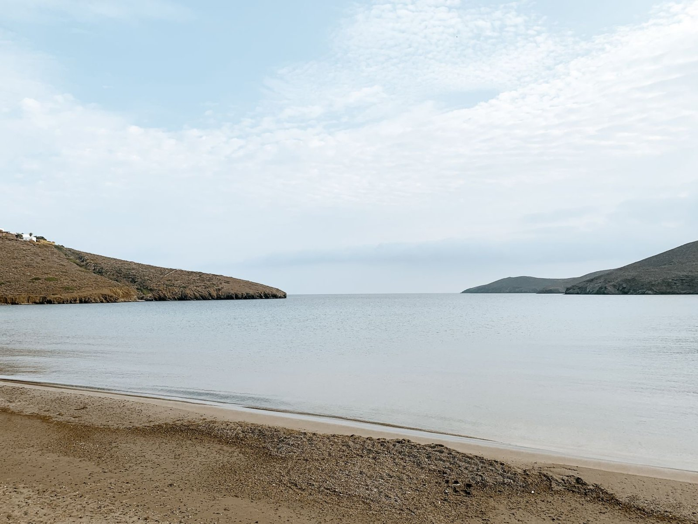

Η ήσυχη γωνιά σας στην Κύθνο
Πέντε εξοχικές κατοικίες σε όλη την Κύθνο, η καθεμία ένα απλό καταφύγιο κοντά στη θάλασσα. Θα βρείτε παραδοσιακά κυκλαδίτικα σπίτια στην Αγία Ειρήνη, τη Δρυοπίδα και τον Μέριχα, επιλεγμένα για την ήρεμη τοποθεσία τους και την εύκολη πρόσβαση στις παραλίες.
ΚράτησηΗ ήσυχη γωνιά σας στην Κύθνο
Το Ονειρικό Σπίτι στην Παραλία-1ος Όροφος

Σπίτι δίπλα στη θάλασσα

Κυκλαδίτικη Μεζονέτα

Πολυτελές σπίτι στην κεντρική παραλία

The Dream House on the Beach-Ground Floor
Ταξιδιωτικός Οδηγός Κύθνου
Η Κύθνος βρίσκεται ανάμεσα στην Κέα και τη Σέριφο, ένα νησί που κινείται με τον δικό του ρυθμό. Τα ψαροκάικα δουλεύουν ακόμα από το λιμάνι του Μέριχα, οι θερμές πηγές αναβλύζουν στα Λουτρά και οι περισσότερες παραλίες παραμένουν ήσυχες ακόμα και τον Αύγουστο.


Οι επισκέπτες μας το αγαπούν
Όλα ήταν υπέροχα!
Ο χώρος ήταν σε καταπληκτική τοποθεσία στην Δρυοπίδα. Ο οικοδεσπότης φιλικός και προσιτός σε όλα. Τον ευχαριστώ πάρα πολύ. Το συστήνω ανεπιφύλακτα!
Είχαμε μια όμορφη διαμονή στο κατάλυμα. Όμορφη τοποθεσία, εντός του παραδοσιακού γραφικού οικισμού της Δρυοπίδας. Ο οικοδεσπότης φιλικός και εξυπηρετικός. Το σπίτι ήταν καθαρό, τακτοποιημένο και πλήρως εξοπλισμένο. Το συστήνω ανεπιφύλακτα!
Πού βρισκόμαστε
Χωρίς προμήθειες πλατφόρμας
Κράτηση απευθείας με τους ιδιοκτήτες, χωρίς επιπλέον προμήθεια
Καλύτερη τιμή, απευθείας
Τα ίδια σπίτια, χωρίς επιβάρυνση τρίτων
Επαληθευμένοι ντόπιοι
Δύο πραγματικοί συν-οικοδεσπότες, με βαθμολογία 5,0 ο καθένας
Σχεδιάστε τη διαμονή σας
Πείτε μας τις ημερομηνίες σας και θα επιβεβαιώσουμε διαθεσιμότητα και κόστος. Κάνετε κράτηση απευθείας με εμάς, χωρίς προμήθειες πλατφόρμας.
Αίτημα κράτησης